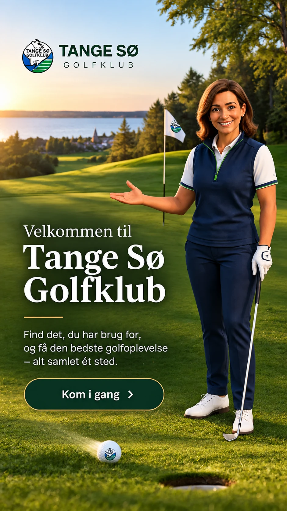

Kontakt
KontaktMP
Morten Paulsen
PRO-TRÆNER · TEORI OG REGLER
61 30 21 12morten@danskgolfakademi.dkSpørgsmål om træning og golfteknik.

Er du ny i golf? Vi hjælper dig fra de første slag til du føler dig tryg på banen og i klubben.
Velkomstvideoen med dansk tale bliver tilføjet, når den er produceret. Indtil da viser vi den valgte velkomstvært.

Oplev golf, natur og fællesskab ved Tange Sø.
Kom godt i gang →Alt det praktiske – samlet ét sted.
Send et forslag til appen ↗Træning med proen, regler og gode oplevelser på banen. Du finder det hele i forløbet og under Oversigt.

Golfkørekortet er din introduktion til spillet. Du øver teknik og regler og lærer at færdes trygt sammen med andre på banen.
Det præcise program og godkendelse af golfkørekort fastlægges af klubben.

Træning, teori og vejledning i golfens regler. Tange tilbyder både individuelle/holdforløb og weekendforløb.
Tilmeld dig hos Tange ↗Tilmelding foregår på klubbens officielle hjemmeside, ikke i demoappen.
God golf handler også om sikkerhed, hensyn og god rytme. Hav udstyret klar, hold øje med andre spillere, luk hurtigere grupper igennem og reparér nedslagsmærker.
Læs altid klubbens gældende lokalregler før spil. Appen gengiver dem ikke som en permanent kopi.
Hold selv styr på dine aktiviteter. Din afkrydsning gemmes på denne enhed, men er ikke en officiel godkendelse.
Apps, golfregler og klubbens egne informationer. Alle links åbner deres officielle side.
Find svar om dit begynderforløb, reglerne og hverdagen i golfklubben.
Ja. Begynderforløbet er lavet til dig, der vil lære golf fra bunden. Du behøver hverken erfaring eller et handicap.
Nej. Klubben oplyser, at der er mulighed for at låne golfudstyr under prøvemedlemskabet. Tjek med klubben, hvad der følger med.
Brug behageligt tøj efter vejret og sko med god støtte og skridsikker sål. Almindelige sportssko er typisk fine til første træning.
Mød frem i god tid ved klubhuset eller det mødested, klubben oplyser i din bekræftelse. Spørg sekretariatet, hvis du er i tvivl.
Ja. Mange begynder uden at kende andre på forhånd. Træningen og klubbens begynderaktiviteter giver mulighed for at møde nye spillemakkere.
Det annoncerede begynderforløb står til 895 kr. Kontroller den aktuelle pris og vilkår på Tanges tilmeldingsside.
Tryk på Tilmelding i appen. Du bliver sendt direkte til klubbens officielle formular.
Morten Paulsen er angivet som pro-træner i denne app. Det konkrete holdprogram og eventuelle øvrige hjælpere oplyses af klubben.
Du lærer blandt andet greb, opstilling, puttning, korte slag og lange slag samt, hvordan du forbereder dig til at spille på banen.
Nej. Målet i starten er kontrol, sikkerhed og en god oplevelse – ikke at slå længst.
Det er de gode vaner på banen: vis hensyn, vær klar når det er din tur, pas på banen, vær stille når andre slår, og hold et passende spilletempo.
Ja, de vigtigste regler indgår i forløbet. I appen kan du åbne både R&A’s regler og DGU’s regelprøve.
Under Golfværktøjer finder du linket til DGU’s regelprøve. Følg klubbens anvisninger om gennemførelse.
Golfkørekortet viser, at du har gennemført klubbens krævede introduktion til golfspil, sikkerhed og regler. Det er klubben, der godkender dig.
Ja. Under Mit golfkørekort kan du krydse aktiviteter af på din telefon. Det er kun dit eget overblik, ikke klubbens officielle registrering.
På driving rangen øver du slag. På golfbanen spiller du hul efter hul og følger banens regler, sikkerhed og rækkefølge.
TIKMA COURSE er klubbens Pay & Play-bane. Se den officielle baneguide og de aktuelle adgangsvilkår via appen.
Stå i sikker afstand, og aldrig foran den spiller, der skal slå. Hold altid øje med andre spillere og banens retning.
Råb straks “FORE!” tydeligt, så andre kan nå at beskytte sig.
Hold øje med tidsforbruget og de andre spillere. Følg golfreglerne, og lad eventuelt hurtigere grupper komme igennem, når det er passende.
Læg opslåede tørv på plads, reparér nedslagsmærker på green og riv sandet efter bunkerbesøg, når det er relevant.
Brug linket Lokale regler under På banen. Lokalregler kan ændre sig, så det er den officielle version, der gælder.
Tjek klubbens aktuelle banestatus, før du tager afsted. Linket findes under På banen.
Ja, klubbens begynderaktiviteter er netop en mulighed for at få hjælp til at begå sig på banen. Spørg klubben, hvordan du deltager.
Du kan tage næste skridt mod medlemskab, spille med andre og lære at bruge Mit Golf og GolfBox til dit fortsatte golfspil.
GolfBox er et system til blandt andet golfrelaterede bookinger og information. De konkrete funktioner afhænger af din klub og adgang.
Mit Golf er DGU’s app til golfspillere. Du finder links til iPhone og Android under Golfværktøjer.
Caféen ligger ved klubbens faciliteter. Se kontaktoplysninger, menukort og åbningstider via linket til Tanges hjemmeside.
Kontakt sekretariatet på 86 65 94 20, tast 1, eller skriv til tangegolf@tangegolf.dk.
Tange Sø Golfklub ligger på Tange Søvej 68, 8840 Rødkærsbro. Brug Find vej under Golfværktøjer eller Kontakt.
Find den rette person eller afdeling. Tryk på nummeret for at ringe eller på e-mailadressen for at skrive.
Spørgsmål om træning og golfteknik.
Begynderforløb, tilmelding og medlemskab.
Spørgsmål om køller og andet udstyr.
Kontaktoplysninger skal godkendes af Tange inden offentlig lancering.

Nu starter golfrejsen for alvor. Lær GolfBox og Mit Golf at kende, find nye spillemakkere og deltag i klubbens aktiviteter.
Se medlemsmuligheder ↗